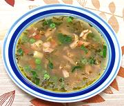

|
Chicken Vegie SoupCalifornia, Southern | ||||
| Serves: Effort: Sched: DoAhead: |
4 soup ** 1-1/4 hrs Most |
This soup is rich and flavorful, with plenty of chicken meat. It's sort of "Pacific Rim" - the chili and mint is something I picked up from a long departed Thai restaurant in Hollywood. The chili bite works better for colds than without, in my opinion. | |||
|
10 ------- 4 2 2-1/2 2 2 3 ------- 16 2 2-1/2 3 3 1 1 1/3 2-1/2 |
oz --- oz cl oz oz --- oz T c c t t oz |
Chicken (1) -- Aromatics Onion Garlic Carrot Celery Chili, dry (2) Thyme Sprig ----------------- Mint Leaves Peas, frozen Olive Oil ExtV Chicken Stock (3) Water Bay Leaf Salt Pepper Pasta (4) |
Prep - (15 min)
|